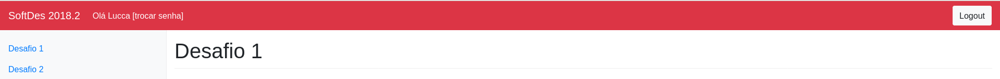

Tutorial para alunos
Logando no servidor
Para logar no servidor, basta acessar o link disponibilizado pelo professor que o levara para a tela de login:
 No inicio sua senha sera a mesma que o nome de usuario, ao logar recomenda-se trocar a senha imediatamente:
Para isso basta clicar em [trocar senha] no canto superior esquerdo:
No inicio sua senha sera a mesma que o nome de usuario, ao logar recomenda-se trocar a senha imediatamente:
Para isso basta clicar em [trocar senha] no canto superior esquerdo:

E realizar a troca de senha:
Enviando desafio
Para realizar um envio basta encotrar o arquivo nos seus diretorios e clicar em enviar

Errado
Caso a entrega nao esteja correta aparecera um feed back como o seguinte:

Ou caso o arquivo seja invalido:

Correto
Caso a entrega esteja correta aparecera um feed back como o seguinte: